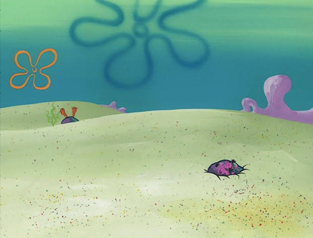

// notes
Undergraduate course notes
Scribed lecture notes from selected UC Berkeley courses — the ones I sat down and wrote up properly, rather than everything I've taken. Free to read and share; if you spot an error, let me know.

You've reached the bottom. More notes as I write them up.